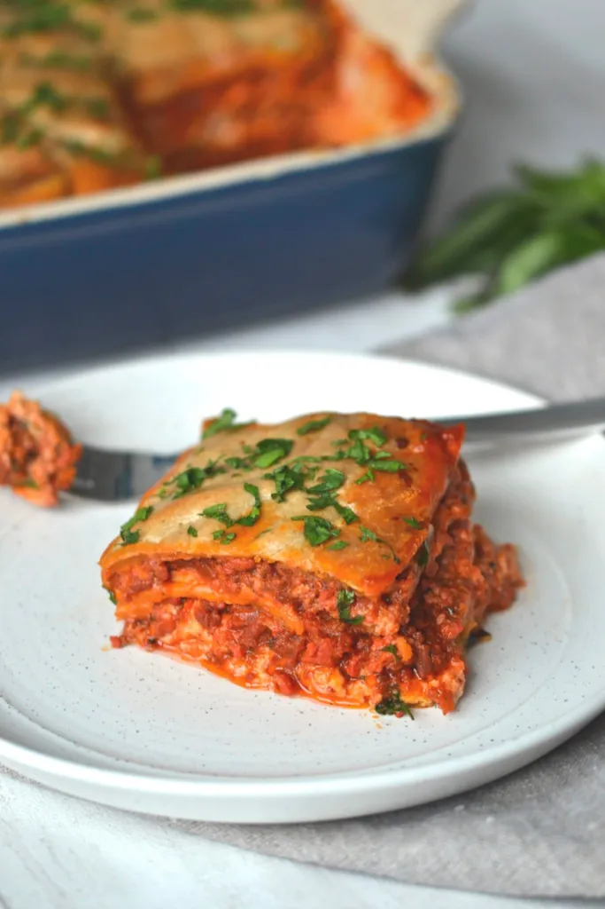
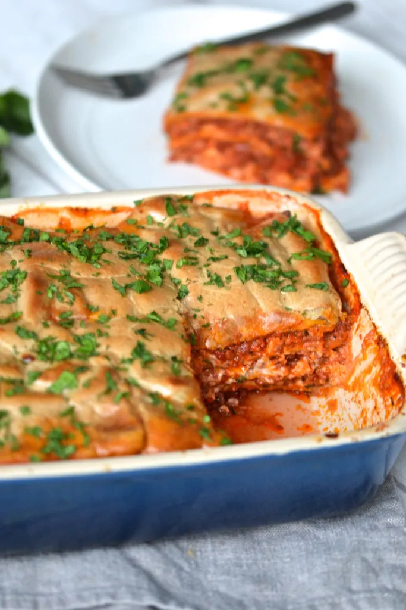
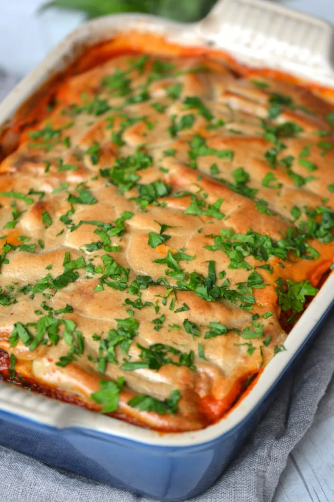
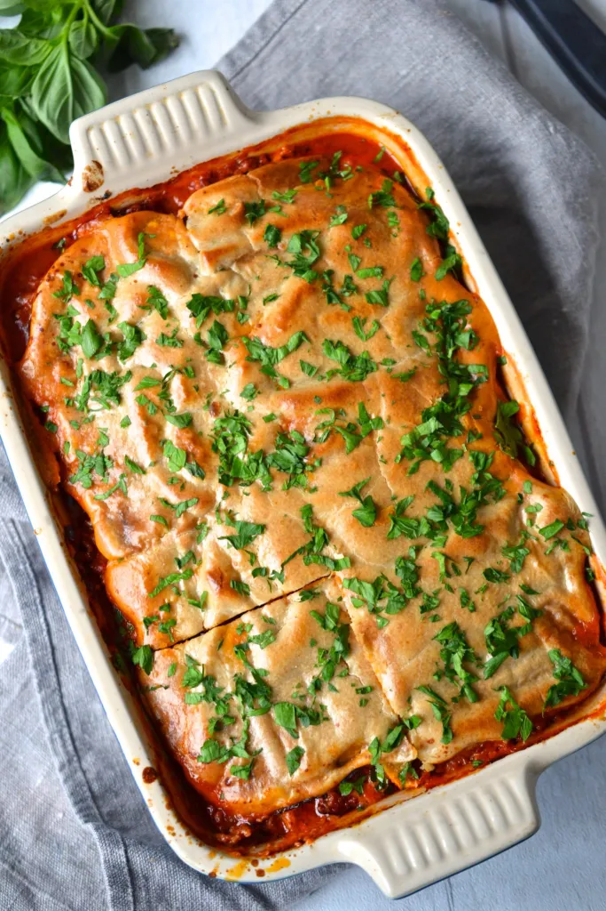

Whole 30 Lasagna
PREP TIME: 20 min
COOK TIME: 1hr 10 min
Serves: 6
CALORIES PER SERVING: 993

Description
This is truely The BEST Whole30 Lasagna around.
It tastes like normal lasagna thanks to thin slices of butternut squash (which are used in place of pasta) and a creamy, dairy free “ricotta”.
It’s Paleo, Whole30, Specific Carbohydrate Diet Legal, Dairy Free, Grain Free, Gluten Free and Keto and guaranteed to quickly become a family favourite.
If you are looking for a grain and dairy free lasagna, I don’t think it can get any better then this recipe, bold statement right? I stand by it because this lasagna is SO GOOD.

Ingredients
- 1 tbsp olive oil
- 1 medium onion finesly diced
- 2 cloves garlic
- 500 grams ground pork
- 500 grams ground beef
- 1/4 tsp salt
- 1 tbsp frest oregano
- 1/2 tbsp chili flakes
- 3 cups tomato sauce
- 2 tbsp tomato paste
- 2 tbsp roughly chopped fresh basil
- 10-12 butternut squash sheets
For the "ricotta"
- 1 cup cashews soaked in boiling water for 10 minutes
- 2 cloves garlic
- 2/3 cup almond milk

Instructions
- Preheat the oven to 375 degrees Fahrenheit
- In a large pot, saute the diced onion and garlic in olive oil for a few minutes until the onion begins to soften.
- Add in the ground meat, sprinkle with salt and using a wooden spoon break the meat up into a fine crumble. Cook for approximately 10 minutes until the meat begins to brown.
- Once the meat is completely cooked through, stir in the oregano, chili flakes, tomato paste and tomato sauce. Leave to simmer for 10 minutes.
- In a high speed blender, combine the drained cashews, garlic and almond milk and blend until completely smooth, there should be no small bits. Transfer the mixture to a bowl and stir in the fresh basil.
- Start by spooing a layer of the tomato meat sauce into a 9x5in baking dish. Place the butternut squash sheets overtop of the sauce, followed by another layer of tomato meat sauce and then a thin layer of the cashew cream.
- Repeat layering 2 more times and finish with a layer of cashew cheese on top.
- Bake in the oven for 45-50 minutes until a golden brown crust has formed and the butternut squash sheets are tender. Keep an eye on the lasagna while it bakes to ensure it doesn't brown too quickly on top (if it does, loosely cover it with a sheet of tin foil). Sprinkle with fresh parsley before serving.
